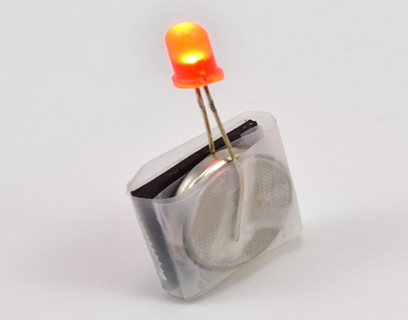

سرگرمی:
ایل ای ڈی اسٹکیز
خلاصہ:
- فعال وقت
10-20 منٹ
- کل پروجیکٹ کا وقت
10-20 منٹ
- بنیادی خیال
بجلی، سرکٹس
تعارف:
اپنے ریفریجریٹر میگنےٹ میں کچھ روشنی ڈالیں اور اس تفریحی کرافٹ پروجیکٹ میں سرکٹس کے بارے میں جانیں!
مواد:
- مختلف ایل ای ڈیز
- 2032 سکے سیل بیٹریاں
- مقناطیسی پٹی
- صاف چپکنے والی ٹیپ
- قینچی
- مقناطیسی سطح (ریفریجریٹر، فائلنگ کیبنٹ وغیرہ)
طریقہ کار
- آگے پڑھے بغیر، ایک LED (روشنی سے خارج ہونے والے ڈایڈڈ) کو بیٹری سے جوڑنے کی کوشش کریں تاکہ اسے روشن کیا جا سکے۔ اگر آپ ایل ای ڈی کی دھات کی ایک یا دونوں ٹانگوں کو بیٹری کے ایک ہی طرف چھوتے ہیں تو کیا ہوگا؟ اگر آپ بیٹری کے مختلف اطراف کی ٹانگوں کو چھوتے ہیں تو کیا ہوتا ہے؟
- ایل ای ڈی کی دو دھاتی ٹانگوں کو قریب سے دیکھیں۔ ان میں سے ایک دوسرے سے قدرے لمبا ہے۔
- اب اپنی بیٹریوں میں سے ایک کو قریب سے دیکھیں۔ اس کے ایک طرف "+" نشان پرنٹ ہونا چاہیے۔
- بیٹری کے ارد گرد ایل ای ڈی کی ٹانگوں کو چوٹکی لگائیں تاکہ ایک ٹانگ ہر طرف چھوئے۔ یقینی بنائیں کہ LED کی لمبی ٹانگ بیٹری کے "+" سائیڈ کو چھوتی ہے۔ ایل ای ڈی کو روشن کرنا چاہئے! اگر آپ کا ایل ای ڈی روشن نہیں ہوتا ہے:
- ایل ای ڈی کو چاروں طرف پلٹانے کی کوشش کریں۔ ہو سکتا ہے آپ نے ایل ای ڈی کی لمبی اور چھوٹی ٹانگیں الٹ دی ہوں۔
- اس بات کو یقینی بنائیں کہ LED کی چھوٹی ٹانگ بیٹری کے کنارے کو نہیں چھوتی ہے، جو کہ "+" سائیڈ سے منسلک ہے۔ اسے صرف بیٹری کے پچھلے حصے کو چھونا چاہیے۔
- یقینی بنائیں کہ دونوں ٹانگیں بیٹری کے ساتھ مضبوطی سے رابطے میں ہیں۔ صرف ایک ٹانگ چھونے سے کام نہیں چلے گا۔
- بیٹری کو صاف ٹیپ کے ٹکڑے میں لپیٹ کر LED کی ٹانگوں کو اپنی جگہ پر رکھیں۔ اس بات کو یقینی بنائیں کہ یہ کافی تنگ ہے کہ جب آپ جانے دیں تو ایل ای ڈی روشن رہے۔
- مقناطیسی ٹیپ کا ایک مربع ٹکڑا تقریباً بیٹری کے سائز کے کاٹیں۔ اسے بیٹری کے ایک طرف رکھیں (یہ دونوں طرف جا سکتا ہے)، پھر اسے صاف ٹیپ کے دوسرے ٹکڑے میں لپیٹ دیں۔

- آپ نے اپنا پہلا ایل ای ڈی چپچپا بنایا ہے! اسے اپنے ریفریجریٹر کی طرح مقناطیسی سطح پر رکھیں۔ لائٹس بند کریں یا رات تک انتظار کریں کہ یہ اندھیرے میں کیسا لگتا ہے۔
- مختلف رنگوں کے ساتھ مزید ایل ای ڈی اسٹکیز بنائیں۔
سرگرمی:
کولر بنائیں
خلاصہ:
- فعال وقت
10-20 منٹ
- کل پروجیکٹ کا وقت
1-2 گھنٹے
- بنیادی خیال
حرارت، موصلیت
تعارف:
کولر چیزوں کو کیسے ٹھنڈا رکھتا ہے؟ کون سا مواد بہترین موصلیت کرتا ہے؟ یہ جاننے کے لیے اس پروجیکٹ کو آزمائیں کہ فریزر سے باہر ہونے کے بعد آپ برف کیوب کو پگھلنے سے کتنی دیر تک روک سکتے ہیں!
مواد:
- دو یکساں سائز کے پلاسٹک فوڈ اسٹوریج کنٹینرز (ایک کو سخت ڈھکن رکھنے کی ضرورت ہوگی)۔
- آئس کیوبز (ایک ہی سائز کے کم از کم دو)
- پلاسٹک کے دو زپ ٹاپ بیگز یا کھانے کے چھوٹے کھانے کے ذخیرہ کرنے والے کنٹینرز/کپ جو بڑے کے اندر فٹ ہوتے ہیں
- ایک کام کی سطح جہاں آپ کے دونوں کنٹینرز گرمی کے بیرونی ذرائع (جیسے سورج کی روشنی یا وینٹ) کے برابر ایکسپوژر ہوں گے۔ سرگرمی کو تیز کرنے کے لیے اپنے کنٹینرز کو دھوپ میں رکھیں اور/یا گرم دن پر باہر لے جائیں۔
- ایک موصل مواد جیسا کہ روئی کی گیندیں، ببل ریپ، پسے ہوئے کاغذ، اور اسی طرح (ایک سے زیادہ اختیاری ہیں) - زیادہ تر آپ کے کھانے کے بڑے برتنوں میں سے ایک کو بھرنے کے لیے کافی
تیاری کا کام:
- زیادہ تر اپنے پلاسٹک کنٹینرز میں سے کسی ایک کے اندر کو موصلیت کے مواد سے بھریں۔ یہ آپ کا "کولر" ہے۔
- ہر ایک بڑے کنٹینر کے اندر ایک زپ ٹاپ بیگ یا پلاسٹک کا چھوٹا کنٹینر رکھیں (اس بات کو یقینی بنائیں کہ موصل کنٹینر کا ڈھکن پورے راستے کو بند کر سکے گا؛ ڈھکن بند ہونے تک کسی بھی موصلیت کی ضرورت کو ہٹا دیں؛ اسے چھوڑ دیں۔ ابھی کے لیے کھلا ہے)۔
طریقہ کار:
- اپنے ہر چھوٹے کنٹینر یا بیگ میں ایک آئس کیوب رکھیں۔
- "موصل" کولر کنٹینر پر ڑککن کو جلدی سے بند کریں۔ (دوسرے بڑے کنٹینر پر ڈھکن نہ لگائیں۔) آپ کے خیال میں کون سا آئس کیوب سب سے طویل رہے گا؟
- اگر آپ کے کام کی جگہ زیادہ گرم نہیں ہے، تو برف کے کیوبز کو پگھلنے میں کچھ وقت لگ سکتا ہے۔ جاؤ 15 منٹ کے لیے کچھ اور کرو، اور پھر واپس آؤ۔ اب کھلے برتن میں آئس کیوب کتنا بڑا ہے؟
- . اس پر منحصر ہے کہ یہ کتنی تیزی سے پگھل رہا ہے، وقفے وقفے سے آئس کیوب کو چیک کرتے رہیں۔ جب تک یہ مکمل طور پر پگھل نہ جائے تب تک چیک کرتے رہیں۔
- جیسے ہی وہ آئس کیوب پگھلنا ختم کرے، اپنا کولر کھولیں اور اس آئس کیوب کو چیک کریں۔ کیا یہ بھی پوری طرح پگھل گیا ہے؟ اگر نہیں تو کتنا بڑا ہے؟
سرگرمی:
ایک پریمیٹر میجک ٹرائنگل کے ساتھ پزل تفریح
خلاصہ:
تعارف:
کیا آپ کبھی بھی دلچسپ مسائل کو حل کرنے کے لیے ریاضی کو بطور آلہ استعمال کرتے ہیں؟ 1970 کی دہائی میں ریاضی کو اکثر سادہ ورک شیٹس کے ساتھ پڑھایا جاتا تھا۔ ایک استاد نے ریاضی اور منطق سیکھنے کا ایک دلچسپ طریقہ تیار کیا۔ اس نے تیار کیا جسے اب پیری میٹر میجک ٹرائی اینگل پزل کے نام سے جانا جاتا ہے۔ انہیں آزمائیں — اور کچھ مزہ کریں جب آپ بالکل نئے طریقے سے گننے کے بارے میں سوچنا شروع کریں!
مواد:
- جادوئی مثلث ٹیمپلیٹ یا خود بنانے کے لیے مواد:
- 9 بائی 12 انچ کے کاغذ کی دو شیٹس، جیسے کہ تعمیراتی یا کرافٹ پیپر (اگر ممکن ہو تو متضاد رنگوں کا انتخاب کریں)
- پنسل یا مارکر
- حکمران
- اسی سائز کی ایک چوتھائی یا دوسری گول چیز
- قینچی
- 21 پیسے، چھوٹے بلاکس یا دیگر چھوٹی اسٹیک ایبل اشیاء
- اختیار: کاغذ کی مزید شیٹس
تیاری کا کام:
- اگر آپ جادوئی مثلث ٹیمپلیٹ استعمال کرتے ہیں، تو ڈیشڈ لائنوں کے ساتھ کاٹ کر مرحلہ 4 پر جائیں۔
- مثلث بنانے کے لیے:
- کاغذ کی شیٹ پر ایک بڑا مثلث کھینچیں (آپ سیدھی لکیریں بنانے میں مدد کے لیے ایک حکمران استعمال کر سکتے ہیں)۔
- مثلث کے ہر کونے اور ہر طرف کے وسط میں ایک دائرے کو ٹریس کرنے کے لیے ایک چوتھائی استعمال کریں۔ آپ کے پاس چھ حلقے ہونے چاہئیں۔
- نمبر ڈسک بنانے کے لیے:
- مثلث پر کھینچے گئے سائز کی طرح چھ دائرے بنائیں۔ اگر ممکن ہو تو متضاد رنگ کے ساتھ کاغذ کی شیٹ استعمال کریں۔
- ان حلقوں کو کاٹ دیں، اور انہیں 1 سے 6 تک نمبر دیں۔
- 21 چھوٹی اشیاء کا انتخاب کریں جو آسانی سے ڈھیر ہو جائیں۔ پینی، میتھ کیوبز اور اسٹیک ایبل کینڈی سبھی اچھے انتخاب ہیں۔
طریقہ کار:
- . مثلث والے کاغذ پر ہر دائرے پر ٹاور بنانے کے لیے 21 پیسے (چھوٹے بلاکس یا اسٹیک ایبل اشیاء) کا استعمال کریں۔ ہر دائرے میں کم از کم 1 پیسہ ہونا ضروری ہے، لیکن کسی بھی دو دائروں میں پیسے کی ایک جیسی تعداد نہیں ہوسکتی ہے (یا کوئی دو ٹاور ایک ہی اونچائی کے نہیں ہوسکتے ہیں)۔
کیا آپ یہ کر سکتے ہیں؟
- . کوشش کرتے رہیں جب تک آپ کو کوئی حل نہ مل جائے!
- ہر ٹاور میں پیسوں (یا اشیاء) کی تعداد شمار کریں۔ ان نمبروں کو سب سے چھوٹی سے بڑی تعداد تک ترتیب سے لکھیں۔
نمبروں کے اس سیٹ کے بارے میں آپ کیا دیکھتے ہیں؟
- ٹاورز کو چاروں طرف شفٹ کریں یا انہیں دوبارہ تعمیر کریں جب تک کہ آپ ایک اور ضرورت پوری نہ کر لیں: مثلث کے ہر طرف تین ٹاورز بنانے کے لیے استعمال ہونے والے پیسوں کی کل تعداد یکساں ہونی چاہیے۔ مثال کے طور پر:
- اگر آپ مثلث کے ایک طرف کھڑے دائروں میں 1، 5 اور 3 پیسوں کے ٹاور بناتے ہیں، تو آپ نے اس طرف 1 + 5 + 3 = 9 پیسے استعمال کیے ہیں۔
- ملحقہ سائیڈ پر 1، 2 اور 4 پیسوں کے ٹاورز کو لائن کرنا کام نہیں کرے گا کیونکہ 1+ 2 + 4 = 7 — پہلی سائیڈ کی طرح 9 نہیں۔ (دیکھیں کہ 1 پیسے کا ٹاور اس مثلث کے کونے پر رکھا گیا تھا، لہذا یہ دو اطراف میں حصہ ڈالتا ہے۔)
اگر آپ اس کے بجائے ملحقہ سائیڈ کے لیے 1، 2 اور 6 آزماتے ہیں، تو یہ کام کرتا ہے کیونکہ 1 + 2 + 6 = 9۔

- اب آپ ایک ٹاور کو رکھ سکتے ہیں جو بچا ہوا ہے اور چیک کر سکتے ہیں کہ آیا اس مثلث کے تیسرے طرف تین ٹاورز میں 9 پیسے استعمال ہوئے ہیں۔ اسے آزمائیں!
کیا آپ نے کوئی حل تلاش کیا؟
- اگر یہ کوئی حل نہیں تو سوچئے۔
کیا آپ کچھ ٹاورز کو دوبارہ ترتیب دے سکتے ہیں اور کوئی حل نکال سکتے ہیں؟
- . فی طرف 9 پیسے کا استعمال ممکن ہے!
کیا آپ نے حل تلاش کیا؟ کیا ایسے کئی طریقے ہیں جن سے آپ ٹاورز کو ترتیب دے سکتے ہیں تاکہ ہر طرف 9 پیسے استعمال ہوں؟
- اگر تجریدی نمبروں کے ساتھ کام کرنا آپ کے لیے آسان ہے تو ٹاورز کو نمبر ڈسک سے بدل دیں۔ ہر نمبر کی ڈسک اس کے بعد پیسوں کے ٹاور کی نمائندگی کرتی ہے۔ نمبر ڈسک پر لکھا ہوا نمبر آپ کو اس ٹاور میں پیسوں کی تعداد سے آگاہ کرتا ہے۔
سرگرمی:
ایک بیگ میں آئس کریم بنائیں
خلاصہ:
تعارف:
کیا آپ نے کبھی آئس کریم بنائی ہے؟ یہ بہت مزہ ہوسکتا ہے، اور آپ ایک سوادج منجمد دعوت کے ساتھ ختم ہوتے ہیں! اصل میں بہت سی دلچسپ کیمسٹری ہے جو آئس کریم بنانے کے پیچھے چلتی ہے۔ مثال کے طور پر، اس بارے میں سوچیں کہ آپ ریفریجریٹڈ (یا کمرے کے درجہ حرارت) کے اجزاء کے ساتھ کیسے آغاز کرتے ہیں اور پھر انہیں آئس کریم میں تبدیل کرنے کے لیے انہیں ٹھنڈا کرنے کی ضرورت ہے۔ اس عمل کے دوران اجزاء کیسے بدلتے ہیں؟ آپ کے خیال میں یہ کتنا اہم ہے کہ انہیں ایک خاص درجہ حرارت پر ٹھنڈا کیا جائے؟ اس سائنسی سرگرمی میں، آپ ایک بیگ میں اپنی آئس کریم بنائیں گے اور اجزاء کو ٹھنڈا کرنے کا بہترین طریقہ دریافت کریں گے تاکہ وہ کریمی مزیدار دعوت بن سکیں!
مواد:
- ماپنے کے چمچ
- ماپنے کا کپ
- شکر
- آدھا۔ متبادل طور پر، دودھ یا بھاری کوڑے مارنے والی کریم استعمال کی جا سکتی ہے۔
- ونیلا نچوڑ
- نمک. مختلف قسم کے نمکیات، جیسے ٹیبل سالٹ یا راک سالٹ، سب کام کریں گے، لیکن تھوڑا مختلف نتائج دے سکتے ہیں۔
- آئس کیوبز (8 سینٹی گریڈ)
- چھوٹے، سیل کیے جانے والے بیگ، جیسے پنٹ سائز یا سینڈوچ کے سائز کے Ziplocs (2)
- گیلن سائز کے مہر لگانے والے بیگ (2)
- تندور کے ٹکڑے یا ایک چھوٹا تولیہ
- ٹائمر یا گھڑی
طریقہ کار:
- ہر ایک چھوٹے سے سیل کیے جانے والے بیگ میں، ایک کھانے کا چمچ چینی، آدھا کپ آدھا کپ (یا دودھ یا بھاری کوڑے مارنے والی کریم)، اور ¼ چائے کا چمچ ونیلا کا عرق رکھیں۔ دونوں تھیلوں کو اچھی طرح بند کر لیں۔
- ایک بڑے، گیلن سائز کے تھیلے میں چار کپ آئس کیوبز شامل کریں۔ پھر تھیلے میں آدھا کپ نمک ڈالیں۔
آپ کے خیال میں نمک کیا کرے گا؟
- اپنے تیار کردہ چھوٹے تھیلوں میں سے ایک کو آئس کیوبز کے ساتھ بڑے بیگ میں ڈالیں۔ یقینی بنائیں کہ دونوں بیگ بند ہیں۔
- اوون کے ٹکڑوں پر رکھیں یا بیگ کو ایک چھوٹے تولیے میں لپیٹیں اور پھر بیگ کو پانچ منٹ تک ہلائیں۔ جب آپ اسے ہلاتے ہیں تو ہر دو منٹ میں چھوٹے بیگ کو محسوس کریں، اور اسے جھانکیں۔
وقت کے ساتھ اجزاء کا کیا ہوتا ہے؟ جب پانچ منٹ ہوتے ہیں تو اجزاء کیسے نظر آتے ہیں؟ آئس کیوبز کے بارے میں کیا ہے - وہ وقت کے ساتھ کیسے بدلتے ہیں، اور آخر تک وہ کیسے نظر آتے ہیں؟
- اب دوسرے بڑے، گیلن سائز کے تھیلے میں چار کپ آئس کیوبز ڈالیں، لیکن اس بار اس میں نمک نہ ڈالیں۔ آپ کے خیال میں نمک استعمال کیے بغیر کیا ہوگا؟
- دوسرے چھوٹے بیگ کو اس بڑے بیگ میں ڈالیں۔ یقینی بنائیں کہ دونوں بیگ سیل ہیں۔
- اوون کے ٹکڑوں پر رکھیں یا بیگ کو چھوٹے تولیے میں لپیٹیں اور پھر بیگ کو پانچ منٹ تک ہلائیں، جیسا کہ آپ پہلے کرتے تھے۔ ایک بار پھر، چھوٹے بیگ کو ہر دو منٹ میں محسوس کریں جب آپ اسے ہلائیں، اور اسے جھانکیں۔
اب وقت کے ساتھ اجزاء کا کیا ہوتا ہے؟ جب پانچ منٹ باقی ہیں، تو وہ پچھلی بار کے مقابلے میں اب کیسے نظر آتے ہیں؟ آئس کیوبز کا کیا ہوگا - کیا وہ اسی طرح تبدیل ہوئے؟
- آپ یہ بھی موازنہ کر سکتے ہیں کہ مختلف آئس کیوب بیگز کتنی سردی محسوس کرتے ہیں۔ کیا ایک دوسرے سے زیادہ سردی محسوس کرتا ہے؟
- اگر آپ نے کامیابی کے ساتھ کوئی آئس کریم بنا لی ہے، تو آپ اپنے کیمسٹری چیلنج کے لذیذ انعام کے طور پر اب اس سے لطف اندوز ہو سکتے ہیں۔
سرگرمی:
آپ اسے کتنی تیزی سے انجام دے سکتے ہیں؟
خلاصہ:
- فعال وقت
20-30 منٹ
- کل پروجیکٹ کا وقت
1 دن تک
- بنیادی خیال
پیداوار کی انجینرنگ
تعارف:
کیا آپ کو برتن بنانے، کپڑے دھونے، یا اپنے کمرے کی صفائی کرنے سے نفرت ہے؟ کیا آپ چاہتے ہیں کہ آپ ان کاموں کو تیزی سے مکمل کرنے کا کوئی طریقہ نکال سکیں؟ اندازہ لگائیں کہ آپ اس تفریحی سرگرمی میں پروڈکشن انجینئر کا کردار کیسے ادا کرتے ہیں!
مواد:
- اس سرگرمی کے لیے درکار مواد کا انحصار اس کام پر ہوگا جسے آپ منتخب کرتے ہیں۔
- آپ یہ سرگرمی اکیلے یا لوگوں کے گروپ کے ساتھ کر سکتے ہیں۔
- کسی کام کو مکمل کرنے میں آپ کو کتنا وقت لگتا ہے اس کی پیمائش کرنے کے لیے گھڑی یا اسٹاپ واچ کا استعمال کریں۔
طریقہ کار:
- اپنے گھر کے ارد گرد ایک کام کا انتخاب کریں جو کچھ پیچیدہ ہو اور اسے مکمل ہونے میں کچھ وقت درکار ہو۔ اچھی مثالوں میں کھانا پکانا، برتن تیار کرنا، کپڑے دھونے کو تہہ کرنا اور ڈالنا، اپنے کمرے کی صفائی کرنا، یا کھلونوں کو دور رکھنا شامل ہیں۔ آسان/فوری کاموں سے گریز کریں جیسے پنسل کو تیز کرنا یا ایک گلاس پانی لینا۔ آپ کوئی ایسا کام چن سکتے ہیں جو آپ عام طور پر اکیلے کرتے ہیں، یا جو آپ اپنے خاندان کے ساتھ کرتے ہیں۔ اس بات پر منحصر ہے کہ آپ کتنی بار کام کرتے ہیں، آپ کو یہ پیمائش کرنے کی ضرورت ہوگی کہ کئی دنوں یا ہفتوں کے دوران آپ کو اس میں کتنا وقت لگتا ہے۔
نوٹ: اگر آپ استاد ہیں، تو آپ اس کی بجائے کلاس روم میں یہ سرگرمی کر سکتے ہیں۔ ایک ایسی سرگرمی کا انتخاب کریں جس میں پوری کلاس شامل ہو۔ مثال کے طور پر: پرنٹ شدہ ورک شیٹس کو پوری کلاس میں تقسیم کرنا، کسی دستکاری یا میکر کی سرگرمی کے بعد صفائی کرنا، یا چھٹی پر جانے کے لیے دروازے پر لائن میں لگنا۔
- اگلی بار جب آپ سرگرمی کرتے ہیں تو اس وقت کے لیے اسٹاپ واچ کا استعمال کریں جس طرح آپ عام طور پر کرتے ہیں۔ مثال کے طور پر:
برتن بنانے کے لیے، جب سب کھانا کھا چکے ہوں تو اسٹاپ واچ شروع کریں، اور جب تمام برتن یا تو ڈش واشر میں لوڈ کیے جائیں (اگر ڈش واشر استعمال کررہے ہیں، تو ڈش واشر کو چلنے میں لگنے والا وقت شامل نہ کریں) یا اس میں اسٹاپ واچ کو بند کردیں۔ خشک کرنے والی ریک/ ہاتھ سے خشک کرکے دور رکھ دیں۔
لانڈری کو تہہ کرنے اور دور کرنے کے لیے، جب آپ لانڈری کو ڈرائر سے باہر نکالیں یا کپڑے کی لائن سے باہر کریں تو اسٹاپ واچ شروع کریں، اور جب تمام لانڈری کو ہٹا دیا جائے تو اسے روک دیں (کپڑوں کو دھونے/سوکھنے میں لگنے والا وقت شامل نہ کریں۔ پہلے سے)۔
- اس وقت کی پیمائش کریں جو آپ کو کام کو مکمل کرنے میں عام طور پر کم از کم دو بار لگتا ہے، اور تمام اقدار کو ریکارڈ کریں۔ اس سے آپ کو ایک بنیادی پیمائش دینے میں مدد ملے گی، کیونکہ اس کام کو مکمل کرنے میں لگنے والے وقت میں کچھ فرق ہو گا۔ مثال کے طور پر، جب تک آپ ہر روز بالکل ایک ہی کھانا نہیں بناتے، مختلف کھانے مختلف مقدار میں گندے پکوان پیدا کریں گے۔
- . اب، مختلف طریقوں کے بارے میں سوچنا شروع کریں جن سے آپ ممکنہ طور پر اس کام کو مزید تیزی سے مکمل کرنے کے لیے بہتر کر سکتے ہیں۔ آپ کا مقصد کام کو بہتر بنانا ہے (اور اس میں شامل تمام لوگوں کے کردار، اگر ایک گروپ کے طور پر کام کر رہے ہیں) اسے جلد سے جلد اور مؤثر طریقے سے مکمل کرنا ہے (کوئی دھوکہ نہیں - مثال کے طور پر، اپنے باورچی خانے کے ارد گرد نہ چلیں تاکہ آپ " تیز تر")۔ مثال کے طور پر:
برتن بناتے وقت، کیا یہ تیز تر ہے کہ ہر شخص اپنی پلیٹ سنک تک لے جائے، اسے دھوئے اور خود خشک کرے؟ یا کاموں کو تقسیم کرنا تیز ہے؟ مثال کے طور پر، ایک شخص میز صاف کرتا ہے، ایک شخص دھوتا ہے، اور ایک شخص خشک کرتا ہے؟
لانڈری کرتے وقت، کیا پہلے چھانٹی کے بغیر، ہر ایک شے کو ایک وقت میں تہہ کرنا اور ڈالنا تیز تر ہے؟ کیا سب سے پہلے لانڈری کو چھانٹنا، پھر ہر چیز کو فولڈ کرنا اور اسے دور کرنا تیز تر ہے؟ پہلے ہر چیز کو چھانٹنے، سب کو ایک ساتھ تہہ کرنے، پھر سب کو دور کرنے کے بارے میں کیا خیال ہے؟
- اگلی بار جب آپ کام کریں تو اپنی بہتری کو نافذ کرنے کی کوشش کریں۔ پیمائش کریں کہ آیا اس میں پہلے سے زیادہ وقت لگتا ہے یا کم۔
کیا آپ کا خیال کام آیا؟ اگر نہیں، تو کیا آپ اس کی وجہ جان سکتے ہیں؟ کیا ایسے اور طریقے ہیں جن سے آپ اس کام کو زیادہ مؤثر طریقے سے انجام دے سکتے ہیں؟
- اپنے کام کو کیسے پورا کرتے ہیں اس میں بہتری لانے کی کوشش جاری رکھیں۔ آپ اسے اصل سے کتنی تیزی سے انجام دے سکتے ہیں؟ جتنی تیزی سے آپ اپنے کام مکمل کرلیں گے، اتنا ہی زیادہ وقت آپ کو کھیلنے میں لگے گا!